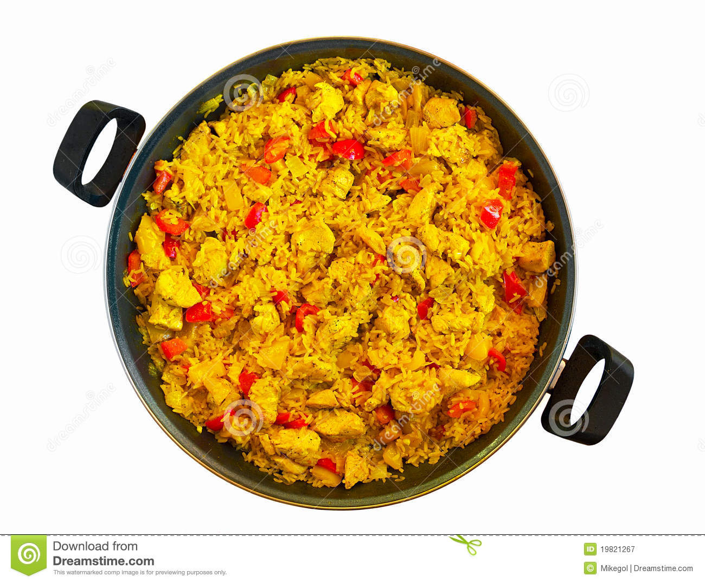

Llistat de Receptes
Arròs blanc amb pollastre
30 min
Difitultat: Fàcil
L'arròs blanc amb pollastre és un plat que es prepara de seguida i que et pot venir molt bé per quan vols menjar alguna cosa lleugera, estàs a dieta o et fa mal la panxa. T'asseurà genial!

Poella
1 hora
Difitultat: Mitjana
Aquest arròs amb pollastre o paella de pollastre és una recepta tradicional, un bàsic dins dels arrossos, el secret del qual està en l'elaboració d'un bon sofregit i en utilitzar brou de pollastre casolà.
Pollastre amb arròs
20 min
Difitultat: Mitjana
Hi ha plats que són veritables records de la teva infància, menjars que han aconseguit fer un lloc al teu receptari d'imprescindibles i es converteixen en una petita celebració cada vegada que les cuines, com l'arròs amb pollastre. Per llepar-se els dits!

Arròs amb pollastre asat Mercadona
6 min
Difitultat: Bebé
Mercadoona, Mercadona! Patrocinat pel mercat Mercadona, ens han pagat molts calers, aixì que aneu a comprar a Mercadona si us plau.
Arròs amb pollastre esmicolat
40 min
Difitultat: Mitjana
D'origen espanyol i llatinoamericà que alhora varia als seus toppings depenent del país, l'arròs amb pollastre és una recepta casolana que rendeix i arriba per a diverses porcions alhora, perfecta per rebre amics.
Arròs amb pollastre arrebossat
20 min
Difitultat: Fàcil
Per dinar avui us proposem un senzill plat d'arròs amb pollastre amb una vistosa presentació i un sabor que agradarà a tothom. Un plat ben fàcil de preparar però amb molt bon sabor que t'assagurem serà perfecte per un mitjdia cansat
Arròs amb pollastre i verdura
35 min
Difitultat: Fàcil
L'arròs amb pollastre i verdures tradicional és una de les formes més populars de preparar aquest cereal. I també més saludable. És una recepta de cuina molt típica d´Espanya i de tota Amèrica llatina. Compta amb totes les proteïnes del pollastre i les vitamines de la verdura.
Arròs amb pollastre i remolatxa
40 min
Difitultat: Mitjana
De les mil maneres que cal cuinar l'arròs, avui ens posem fil a l'agulla amb una de les que tenen una presentació més sorprenent: arròs cremós de pollastre i remolatxa. L'increïble d'aquesta recepta és, a més del sabor, el color que adquireix gràcies a la remolatxa.
Arròs tres delícies
20 min
Difitultat: Mitjana
Recordo que des de ben petit, quan anava a dinar a un dels restaurants xinesos amb els meus oncles, el pollastre a la llimona, el pollastre amb ametlles o el porc agredolç. Si d'aquella cuina oriental per a occidentals n'hi havia un plat que m'agradava per sobre de tots, aquesta era la recepta de l'arròs tres delícies.